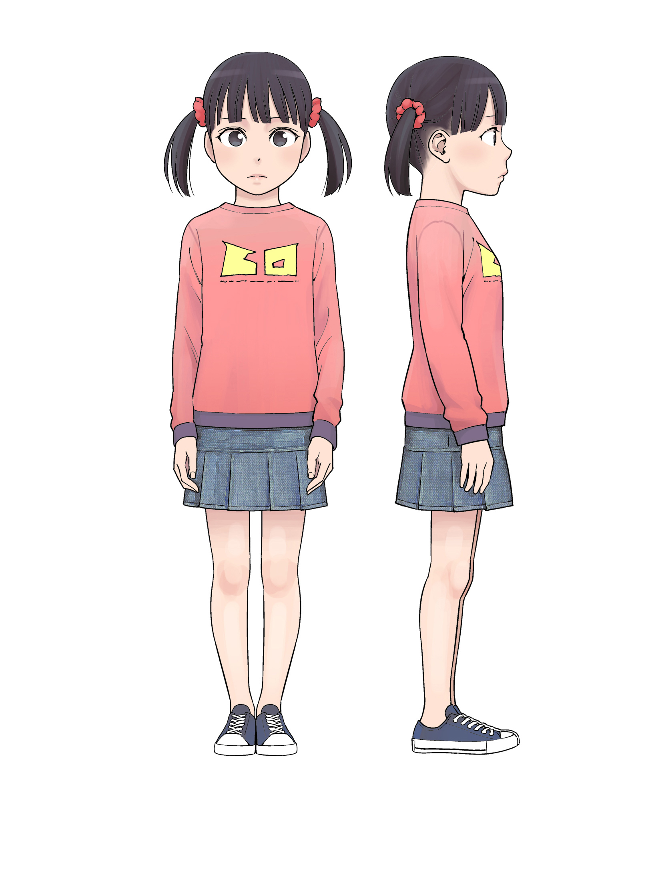

跳到人物巡覽
WEB115 / PARALLAX
CAMERA-PATH STUDY · 02
顯示路線

FRONT / HEAD
X 1150 · Y 700
FRONT / FEET
X 1150 · Y 3030
SIDE / FEET
X 1925 · Y 3030
SIDE / HEAD
X 1880 · Y 705
Moving large image / Camera path
不移動背景，
改移動整個世界。
向下捲動開始巡覽 ↓
↓
DOWN